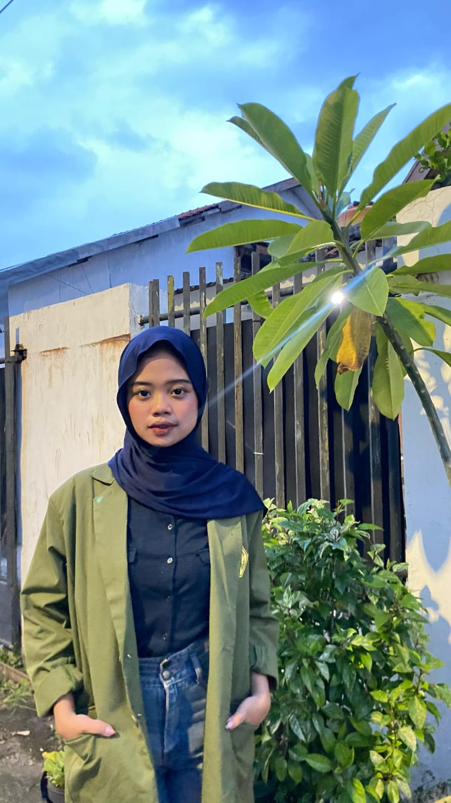

Mahasiswa UPN Veteran Jawa Timur
| Nama | : Zikhaila Diva Priamita |
| Tempat, Tanggal Lahir | : Malang, 2 April 2004 |
| Alamat | : Jl. Simo Pomahan Baru Barat Gang 6 No 12 |
| Jenis Kelamin | : Perempuan |
| Agama | : Islam |
Saya adalah mahasiswa Sistem Informasi dengan minat dalam pengembangan perangkat lunak, analisis data, dan bisnis digital. Saya aktif dalam berbagai proyek teknologi dan organisasi mahasiswa.